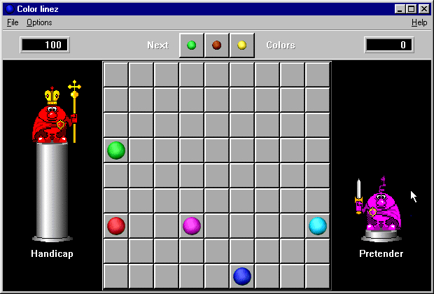
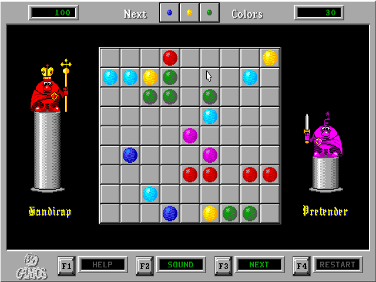

Color linez
This is fan page of computer game Color linez
- The largest list of Color linez clones on the Internet will be added on this webpage very soon.
What is "Color linez"
- computer game
- created in 1998
- clone of DOS game Color Lines (created in 1992)
Color linez looks like this

Color Lines looks like this
